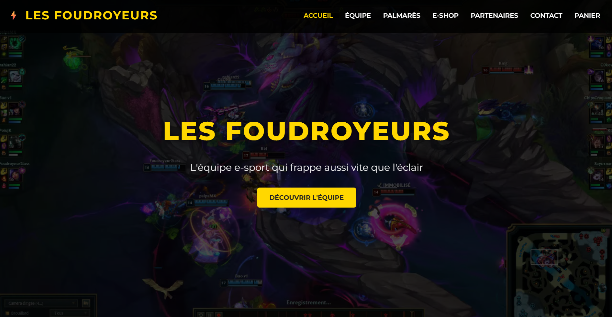

Déploiement et intégration d’un site e-commerce — Projet Foudroyeur
Contexte
Dans le cadre du projet fictif Les Foudroyeurs, j’ai participé au déploiement et à l’intégration d’un site e-commerce orienté e-sport. L’objectif était de rendre le site accessible, fonctionnel et cohérent avec l’image de l’équipe.
Le site présente une identité visuelle forte autour de l’univers gaming, avec une page d’accueil, une navigation principale et une boutique en ligne.
Aperçu du site

La page d’accueil met en avant le nom de l’équipe, une navigation claire et un bouton d’appel à l’action permettant d’accéder à la présentation de l’équipe.
Objectifs
- Déployer un site e-commerce fictif
- Intégrer les différentes pages du site
- Mettre en place une navigation claire
- Valoriser l’image de l’équipe Les Foudroyeurs
- Assurer la cohérence graphique du site
- Vérifier le bon fonctionnement des liens et contenus
Environnement technique
Travaux réalisés
Intégration de l’interface
Intégration des pages principales du site avec une identité visuelle basée sur les couleurs noir et jaune, en lien avec l’univers du projet.
Navigation du site
Mise en place d’un menu de navigation permettant d’accéder aux pages : Accueil, Équipe, Palmarès, E-shop, Partenaires, Contact et Panier.
Déploiement du contenu
Ajout des contenus textuels, visuels et éléments graphiques afin de rendre le site complet, compréhensible et exploitable.
Tests et corrections
Vérification de l’affichage, des liens, de la navigation et de la cohérence générale avant la mise à disposition du site.
Fonctionnalités mises en place
- Page d’accueil avec bannière visuelle
- Menu de navigation principal
- Page e-shop / catalogue
- Présentation de l’équipe
- Page partenaires
- Page contact
- Panier e-commerce
- Interface adaptée à l’univers gaming/e-sport
Résultats obtenus
Site intégré
- Site e-commerce accessible
- Navigation fonctionnelle
- Identité visuelle cohérente
- Pages principales intégrées
- Contenus organisés et visibles
Impact
Cette réalisation permet de valoriser la présence en ligne du projet Foudroyeur grâce à un site web structuré, clair et adapté à son identité e-sport.
Compétences mobilisées
- Développer la présence en ligne de l’organisation
- Participer à l’évolution d’un site web
- Valoriser l’image d’une organisation
- Intégrer des contenus numériques
- Tester et vérifier le fonctionnement d’un site
- Structurer une interface web
Bilan personnel
Cette réalisation m’a permis de renforcer mes compétences en intégration web et en valorisation de contenus numériques. J’ai appris à travailler sur la cohérence graphique d’un site, à organiser une navigation claire et à vérifier le bon fonctionnement d’une interface destinée aux utilisateurs.